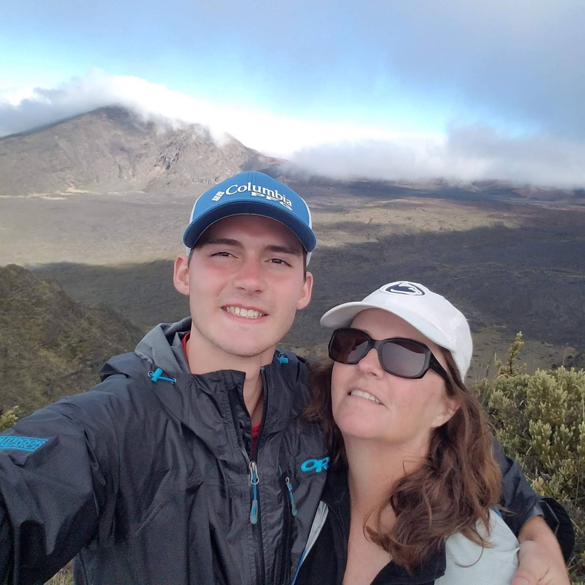

About Me
I'm a Dual Major in Computer Science and Statistical Science at Duke University, with an unwaning curiosity and a passion for solving problems that improve people's quality of life. I have substantial Full-Stack Development and Design experience from my professional, personal, and academic endeavors.
Besides technical stuff, I'm a huge Patriots and Celtics fan from growing up outside Boston. Some of my hobbies include playing the piano, shooting hoops, and spending time outdoors.

My Path 👣
Snapshots 📸
Upcoming ⌚️
August
- Wells Fargo Campus Analytics Challenge - Data Science Competition focusing on NLP